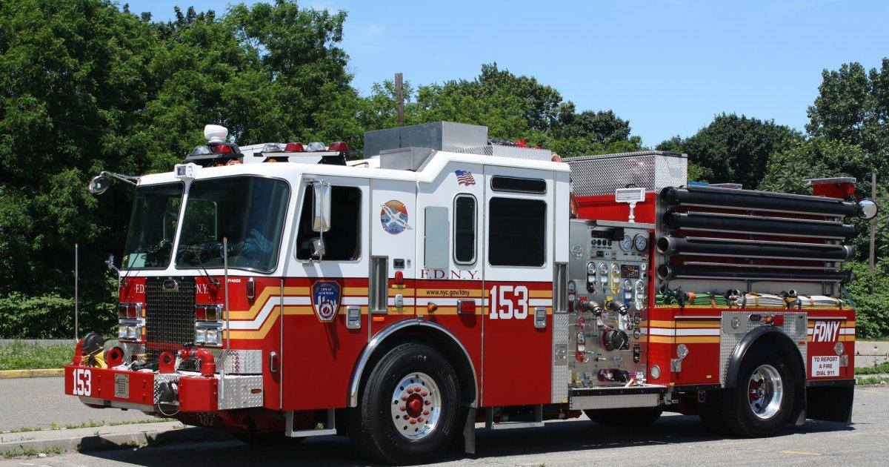

The New York City Fire Department (FDNY), is a department of the government of New York City that provides fire protection, technical rescue, response to biological, chemical, and radioactive hazards, and emergency medical services to the city of New York.
